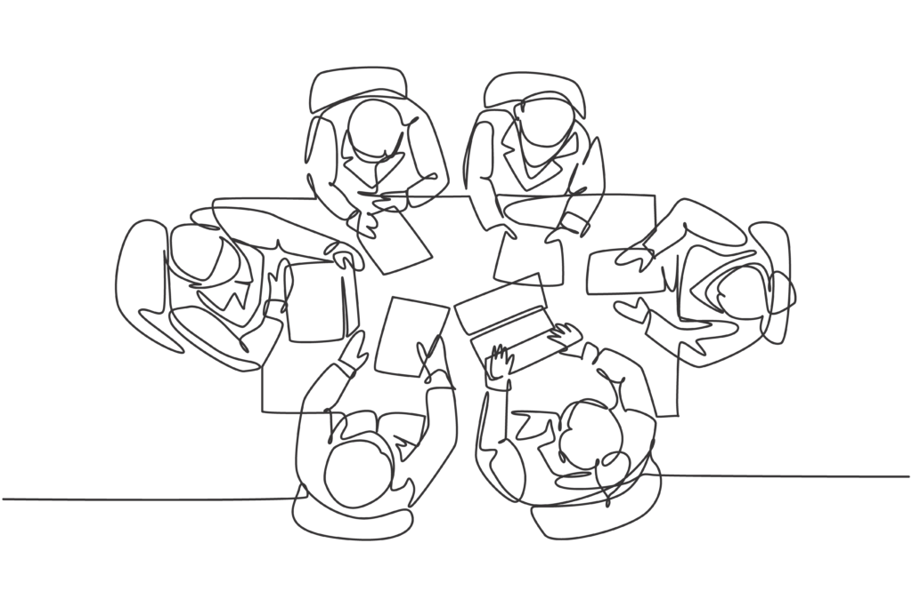
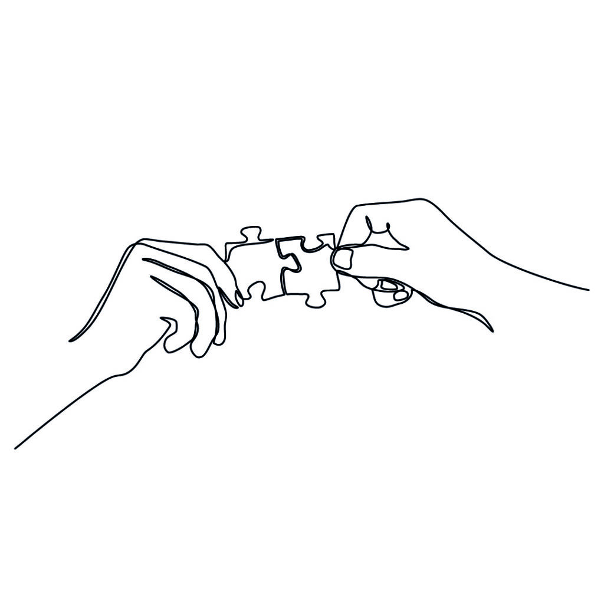
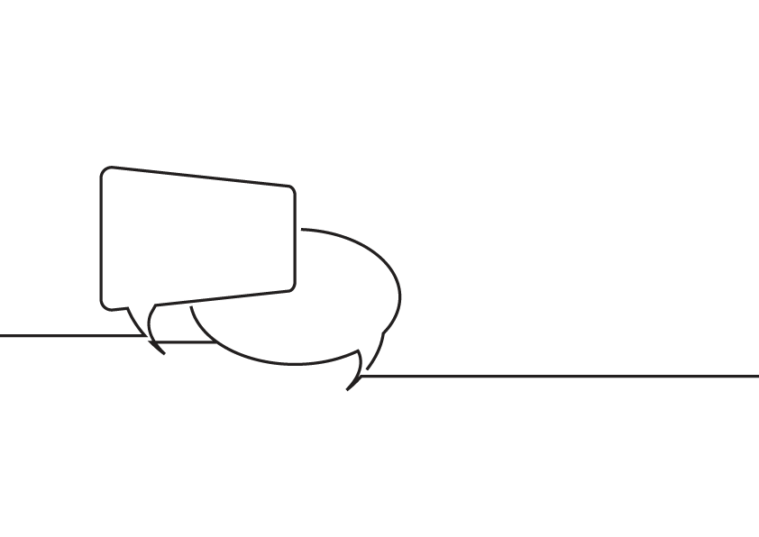
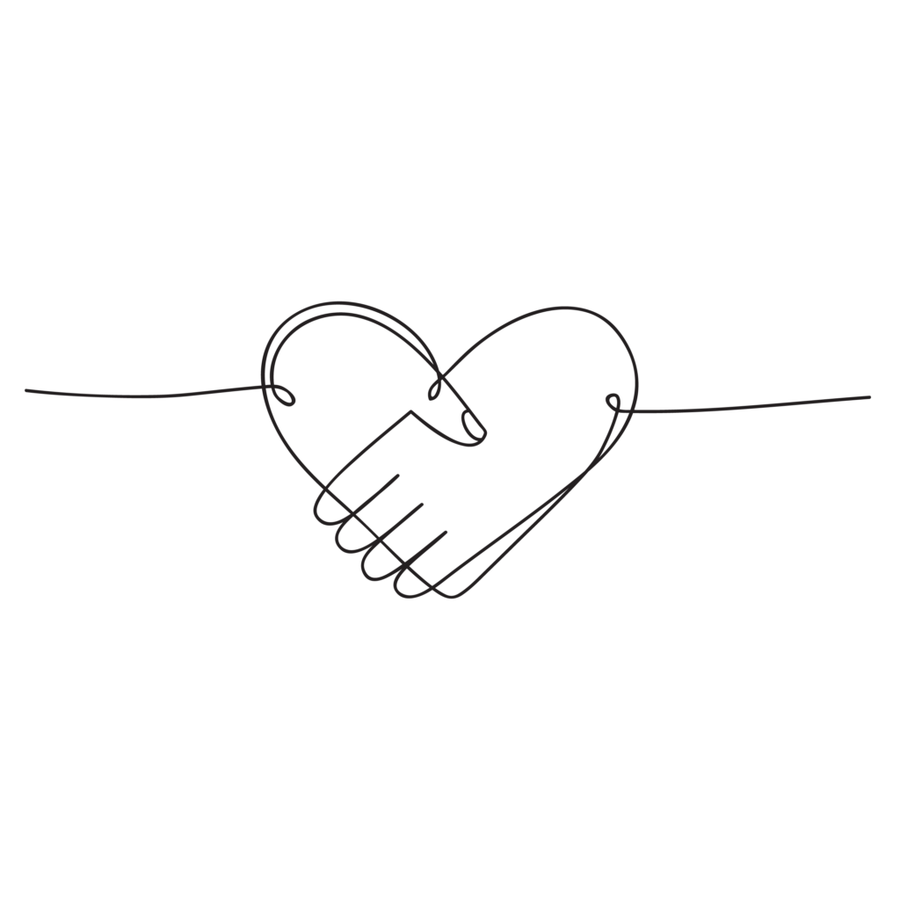

The concept of Taqreeb, as we define it, is the propagation of inter/intra faith and community understanding so that we may better unite for peaceful causes. In our attempt to understand each other's ideologies, it does not mean that we must homogenize diverse groups or ignore differences. It does not mean "taking things lying down" or giving up one's rights or culture. We believe there is nothing passive about Taqreeb. It is an active effort to understand our differences as well as commonalities and build bridges.
Our aim is to learn to respect the differences we cannot reconcile and find common ground on which we can build our relationships. Our hope is that these concepts and ideas will develop and positive reverberations in the communities we live in through grassroots movements and policy decisions.
What we do
Academic Conferences
The Taqreeb academic conferences bring together eminent scholars, activists, religious leaders from India and internationally. The panels have included topics such as 1) Plurality in Religious Thought, 2) Entangled Histories, Imagined Politics, 3) Leadership and Peace, 4) Engaging Precedents for Peace in the Present, 5) Race, Caste, & Identity in Contemporary India, and more. Read more etc etc


Syedna Qutbuddin Harmony Prize
The Syedna Qutbuddin Harmony prize is awarded to honor an individual or organization whose work has had an exceptional impact in promoting harmony and peace in India as well as globally, and in fostering understanding, affection and respect among members of different communities and denominations. The Syedna Qutbuddin Harmony Prize is in the form of a plaque of honour, and a monetary award of up to 10,00,000 INR to be used toward further efforts of fostering peaceful and harmonious co-existence.
Interfaith Dialogue
Syedna TUS has addressed and discussed action plans for peace and the roles religious leaders can play during tumultuous times of discord and violence.


Grassroots Interfaith Work and Community Building
We believe it is important to bring these concepts into action with grassroots work in the community. The Zahra Hasanaat centers are a manifestation of Taqreeb and are open to all regardless of caste and creed. The centers provide a platform to engage and build positive relationships across all communities - real world positive impact for communal harmony is made possible by nurturing positive relationships. In the spirit of Taqreeb, Syedna Saheb has also opened Raudat-un-Noor to the public for guided tours every Sunday.
Objectives
Academics: The Study of Pluralism and Peace
- Organize and sponsor academic conferences
- Design courses that educate students of writings and activism of stalwarts of Taqreeb
- Encourage research interests on understanding the differences between and within religions and cultures and focus efforts on identifying the common areas
Grassroots: Finding common ground
- Explore and initiate efforts to bring people together and unite people on Taqreeb
- Expand the horizon of Taqreeb to all faiths, religions, communities, and ideologies
Dialogue and Mediation
- To bring together religious leaders to play positive roles in peace building and diplomatic efforts.
- To facilitate interfaith dialogue brings at various social levels, and target different types of participants, including grassroots activists.
Apply ↗
The Taqreeb Interfaith Committee reviews applications based on merit and shared visions for the programs. Considerations include potential longterm collaborations, growth of partnership and other criteria
Contribute ↗
The organization is committed to good governance, transparency, fair management, responsible use of funds, and accountability.
Get involved ↗
Upliftment, not charity, is beneficial for both the givers and receivers as it instills a sense of connectedness in the community and gratitude for what we have.